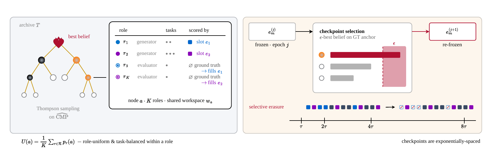
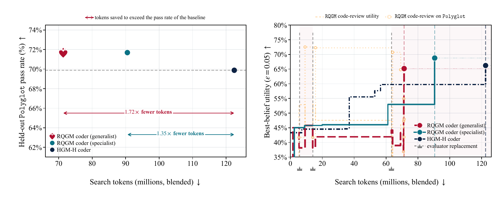
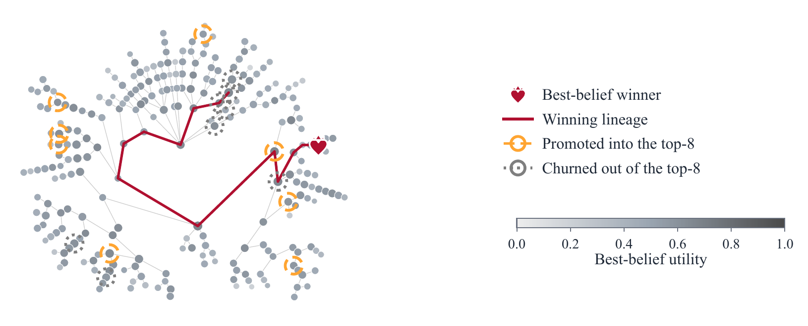
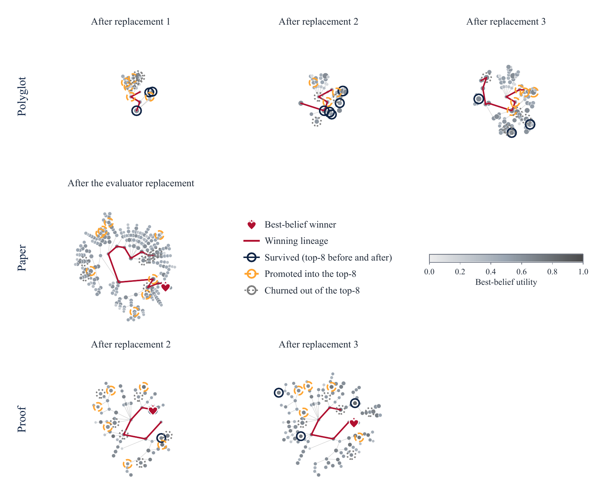

Self-improving agents (Darwin/Huxley-Gödel Machines) rewrite their own code to climb a benchmark — but they optimize against a fixed judge, which saturates or gets reward-hacked. The Red Queen Gödel Machine (RQGM, Cambridge/NVIDIA) makes the evaluator part of the search: agents and the learned evaluators that score them co-evolve, with "controlled utility evolution" that lets the objective change at epoch boundaries while keeping per-epoch guarantees. Named for the Red Queen effect — you must keep running to stay in place. 자기개선 에이전트(Darwin/Huxley-Gödel Machine)는 자기 코드를 고쳐 벤치마크를 오르지만, 고정된 심판에 대고 최적화해 포화되거나 보상 해킹당한다. Red Queen Gödel Machine(RQGM, Cambridge/NVIDIA)은 평가자를 탐색의 일부로 만든다: 에이전트와, 그들을 채점하는 학습된 평가자가 함께 진화하며, "통제된 효용 진화"로 목적함수를 에폭 경계에서 바꾸되 에폭별 보장은 유지한다. 이름은 Red Queen 효과 — 제자리에 있으려면 계속 달려야 한다 — 에서.
Self-improving agents that rewrite their own code and keep changes that raise a score. Darwin-GM and Huxley-GM (DGM/HGM) are recent LLM instances; RQGM builds on HGM.점수를 올리는 변경을 유지하며 자기 코드를 고치는 자기개선 에이전트. Darwin-GM·Huxley-GM(DGM/HGM)은 최근 LLM 사례; RQGM은 HGM 위에 세워짐.
From evolutionary biology (Van Valen): species must keep adapting just to survive against competitors that adapt in turn. Here: the agent faces an evaluator that keeps getting stricter.진화생물학(Van Valen): 함께 진화하는 경쟁자에 맞서 살아남으려면 계속 적응해야 한다. 여기선: 에이전트가 점점 엄격해지는 평가자를 마주한다.
Search is chopped into epochs. Within one, the evaluation criterion is fixed (a stationary problem); between epochs it may change — so guarantees hold per epoch while the objective evolves across them.탐색을 에폭으로 자름. 에폭 안에서는 평가 기준 고정(정적 문제), 에폭 사이엔 바뀔 수 있음 — 그래서 에폭별로 보장이 성립하면서도 목적함수가 진화한다.
A held-out ground-truth set (real accept/reject decisions, human grades) that evaluators are scored against at epoch boundaries. A challenger replaces the incumbent only if it beats it on the anchor. The anchor caps how far the system can drift.에폭 경계에서 평가자를 채점하는 홀드아웃 ground-truth(실제 accept/reject, 사람 채점). 도전자는 앵커에서 이길 때만 기존을 교체. 앵커가 드리프트 상한을 정한다.
CMP = clade metaproductivity: judge a node by the pooled success of its whole descendant subtree, not itself. Best-belief (BBε) = a conservative ε-quantile of that success posterior — promote only what you're 95% sure is good.CMP = clade metaproductivity: 노드를 자신이 아니라 후손 서브트리 전체의 성공으로 평가. Best-belief(BBε) = 그 성공 사후분포의 보수적 ε-분위 — 95% 확신할 때만 승격.
When an evaluator is replaced, throw out only the utility records that depended on it; keep all unrelated evidence. This lets the new (stricter) criterion re-rank the archive instead of being averaged into stale scores.평가자가 교체되면 그것에 의존한 효용 기록만 버리고 무관한 증거는 유지. 새(더 엄격한) 기준이 낡은 점수에 섞이지 않고 아카이브를 재정렬하게 한다.
Self-improving agents (DGM, HGM, HyperAgents) recursively edit their own code/prompts and are SOTA on agentic coding. But their search assumes a stationary evaluation criterion — a fixed verifier, benchmark, or labeled set that stays valid as the agent improves. Biology doesn't work that way: organisms adapt to competitors that adapt in turn.
자기개선 에이전트(DGM, HGM, HyperAgents)는 자기 코드/프롬프트를 재귀적으로 고쳐 에이전트 코딩에서 SOTA다. 하지만 그 탐색은 정적 평가 기준을 가정한다 — 에이전트가 나아져도 유효한 채로 있는 고정 검증자·벤치마크·라벨. 생물학은 그렇지 않다: 유기체는 함께 진화하는 경쟁자에 적응한다.
"This ignores a central feature of evolution: species do not optimize against a static environment, but adapt as their environments change with them."
— Abstract · arXiv:2606.26294
A fixed criterion breaks in three settings: (i) tasks with no direct benchmark (writing a paper or proof); (ii) tasks where evaluation is slow or weak (reviewing, grading); (iii) static benchmarks that saturate or become reward-hackable as agents improve. Concretely, the strongest baseline reviewer over-accepts AI-generated papers at up to 1.91× the human rate — a reward-hacking failure a frozen judge cannot fix.
고정 기준은 세 상황에서 깨진다: (i) 직접 벤치마크가 없는 과제(논문·증명 작성); (ii) 평가가 느리거나 약한 과제(리뷰·채점); (iii) 에이전트가 나아지며 포화되거나 보상 해킹 가능해지는 정적 벤치마크. 구체적으로, 가장 강한 베이스라인 리뷰어가 AI 생성 논문을 사람 대비 최대 1.91배 과다 수락한다 — 얼린 심판으로는 못 고치는 보상 해킹 실패.
"What unites them is a fixed evaluation criterion held outside the loop for the duration of a run, which leaves them open to reward hacking and to the position, verbosity, and self-preference biases of model-based judges."
— §2 Related Work · arXiv:2606.26294
RQGM makes four changes to prior tree-search self-improvement: (i) each archive node is a multi-agent workspace (K roles = task agents + evaluators + a meta-agent that can edit any code), not a single agent; (ii) evaluators are themselves learned processes that improve during search; (iii) utility functions can change at designated epochs; (iv) evaluators can be replaced at epoch boundaries.
RQGM은 기존 트리 탐색 자기개선에 네 가지를 바꾼다: (i) 각 아카이브 노드가 단일 에이전트가 아니라 멀티 에이전트 워크스페이스(K개 역할 = 태스크 에이전트 + 평가자 + 모든 코드를 고칠 수 있는 메타 에이전트); (ii) 평가자도 탐색 중 개선되는 학습 프로세스; (iii) 지정된 에폭에서 효용함수가 바뀔 수 있음; (iv) 에폭 경계에서 평가자를 교체할 수 있음.

RQGM searches a tree of multi-agent workspaces holding both learnable task agents and evaluators (each node = K roles + shared workspace). Left: Thompson sampling over CMP. Right: at exponentially-spaced checkpoints the ε-best-belief evaluator on a GT anchor is re-frozen, and the displaced evaluator's utility records are selectively erased.RQGM은 학습 가능한 태스크 에이전트 와 평가자를 함께 담은 멀티 에이전트 워크스페이스의 트리를 탐색한다(노드 = K개 역할 + 공유 워크스페이스). 왼쪽: CMP에 대한 Thompson 샘플링. 오른쪽: 지수 간격 체크포인트마다 GT 앵커에서 ε-best-belief 평가자를 재고정하고, 밀려난 평가자의 효용 기록은 선택적으로 삭제한다. · Figure 2, arXiv:2606.26294
The key mechanism is controlled utility evolution. Search is divided into epochs. Within an epoch, one evaluator per slot is frozen and grades every task agent → a stationary signal, so prior per-epoch self-improvement guarantees hold. Between epochs, at a checkpoint, each evaluator slot compares its incumbent against co-evolved challengers, scored on a held-out ground-truth anchor; a challenger wins only if it statistically beats the incumbent on that anchor. On replacement, selective erasure discards only the utility records that depended on the displaced evaluator, preserving all unrelated evidence.
핵심 메커니즘은 통제된 효용 진화다. 탐색을 에폭으로 나눈다. 에폭 안에서는 슬롯마다 평가자 하나를 얼려 모든 태스크 에이전트를 채점 → 정적 신호라 기존 에폭별 보장이 성립한다. 에폭 사이의 체크포인트에서 각 평가자 슬롯이 공진화한 도전자들과 홀드아웃 ground-truth 앵커에서 비교되고, 도전자는 앵커에서 통계적으로 이길 때만 승리한다. 교체 시 선택적 삭제가 밀려난 평가자에 의존한 효용 기록만 버리고 무관한 증거는 모두 보존한다.
"We make this possible through controlled utility evolution: search is organized into epochs with a fixed within-epoch evaluation criterion, while the utility can be updated at epoch boundaries, so self-improvement guarantees hold per epoch as the objective evolves across them."
— Abstract · arXiv:2606.26294
"At an epoch boundary, a challenger replaces the frozen evaluator only if it statistically outperforms the incumbent on this ground truth; the RQGM then applies selective erasure, discarding only utility records that depended on the replaced evaluator."
— §1 Introduction · arXiv:2606.26294
The base search is inherited from HGM: a tree over an agent archive, utility = clade metaproductivity (CMP) (pooled success over a node's whole descendant subtree), node selection by ε-best-belief (BBε), expansion/eval balanced by a UCB-style gate. Each node is a workspace of K roles with its own task pools; a meta-agent can edit role code, prompts, and the task-agent harness (only the scoring/orchestration harness is fixed).
기저 탐색은 HGM에서 물려받는다: 에이전트 아카이브의 트리, 효용 = clade metaproductivity(CMP)(노드의 후손 서브트리 전체 성공 pooling), 노드 선택 = ε-best-belief(BBε), 확장/평가 균형 = UCB식 게이트. 각 노드는 자체 태스크 풀을 가진 K개 역할의 워크스페이스이고, 메타 에이전트가 역할 코드·프롬프트·태스크 에이전트 하네스를 고칠 수 있다(채점/오케스트레이션 하네스만 고정).
| Domain도메인 | Task과제 | Ground-truth anchorground-truth 앵커 |
|---|---|---|
| Coding코딩 | Polyglot (166 held-out, executable tests) | CRAVE (accepted/rejected PRs)CRAVE(수락/거절 PR) |
| Paper writing/review논문 작성/리뷰 | write a paper; learned reviewer scores it논문 작성; 학습된 리뷰어가 채점 | APReS (accept/reject decisions) |
| Proof writing/grading증명 작성/채점 | write a proof; learned grader scores it증명 작성; 학습된 grader가 채점 | IMO-GradingBench (human grades) |
All main runs use GPT-5.5 (low) for the meta-agent, task agents, held-out eval, and panel scoring; the baseline is HGM-H (HGM search + HyperAgents workspaces, but with a fixed external evaluator). Cost is measured in blended tokens (input + 5× output), and an agent's cost is the budget consumed when it first attains its highest BBε. Budget = 12,288 evaluations/run; ε = 0.05; checkpoints power-of-two spaced.
모든 주요 런은 메타 에이전트·태스크 에이전트·홀드아웃 평가·패널 채점에 GPT-5.5 (low)를 쓰고, 베이스라인은 HGM-H(HGM 탐색 + HyperAgents 워크스페이스이되 고정 외부 평가자)다. 비용은 blended token(입력 + 5×출력)으로 재고, 에이전트 비용은 최고 BBε를 처음 달성했을 때까지 소모한 예산이다. 예산 = 런당 12,288 평가; ε = 0.05; 체크포인트는 2의 거듭제곱 간격.
On Polyglot, adding a cheap co-evolved code reviewer lifts held-out pass rate to 71.7% vs HGM-H's 69.9%, at 1.35–1.72× fewer search tokens. 90% of accepted patches modify shared functionality used by both coder and reviewer — co-evolution enriches the search rather than splitting effort.
Polyglot에서 값싼 공진화 코드 리뷰어를 더하면 홀드아웃 통과율이 HGM-H의 69.9% 대비 71.7%로 오르고, 탐색 토큰은 1.35~1.72배 적다. 수락된 패치의 90%가 코더·리뷰어 둘 다 쓰는 공유 기능을 고친다 — 공진화가 노력을 쪼개는 게 아니라 탐색을 풍부하게 한다.

RQGM exceeds prior SOTA HGM-H on Polyglot with 1.35×–1.72× fewer search tokens by adding a cheap evolved code reviewer. Left: pass rate vs search cost (arrows = tokens saved to beat the baseline). Right: best-belief utility during search — it drops at each evaluator replacement (selective erasure) then re-climbs under the new criterion; shaded bands mark epochs.RQGM은 값싼 진화형 코드 리뷰어를 더해 Polyglot에서 이전 SOTA HGM-H를 1.35×–1.72× 적은 탐색 토큰으로 능가한다. 왼쪽: 통과율 대 탐색 비용(화살표 = 베이스라인을 넘기려 절약한 토큰). 오른쪽: 탐색 중 best-belief 효용 — 평가자 교체(선택적 삭제)마다 떨어졌다가 새 기준 아래 다시 상승; 음영 밴드는 에폭. · Figure 1, arXiv:2606.26294
| WriterWriter | Reviewer acceptance (panel mean)리뷰어 수락(패널 평균) |
|---|---|
| HGM-H writer | 21.8% |
| RQGM writer (generalist) | 38.8% (1.78×) |
| RQGM writer (specialist) | 40.5% (1.86×) |
For proofs, the RQGM specialist prover reaches mean score 4.33/7 and Pass@6 61.7% — best overall, though it concedes the stricter Pass@7 to a static Olympiad prover. Proof gains only appear at longer horizons, once HGM-H's frozen grader "ceases to provide an informative signal."
증명에선 RQGM 스페셜리스트 prover가 평균 4.33/7, Pass@6 61.7%로 종합 최고이나, 더 엄격한 Pass@7은 정적 올림피아드 prover에 양보한다. 증명 이득은 HGM-H의 얼린 grader가 "유익한 신호를 더는 못 줄" 만큼 긴 지평에서만 나타난다.
"At the matched-compute point where HGM-H commits to its writer, our writer already achieves a 1.78x higher reviewer-panel acceptance rate on average, and across the full panel it beats HGM-H as evaluated by every reviewer, with a 1.86x higher acceptance rate."
— §5.2 · arXiv:2606.26294
Each evaluator replacement permanently re-ranks the archive (Spearman ρ between pre/post rankings settles well below 1 and never recovers), while a resilient backbone lineage survives each transition — a curriculum that hardens the population around a stable core. The no-erasure control stays at ρ ≥ 0.90, proving erasure is necessary for the new criterion to steer search.
각 평가자 교체는 아카이브를 영구히 재정렬하고(교체 전후 랭킹의 Spearman ρ가 1 훨씬 아래로 떨어져 회복 안 됨), 동시에 강인한 backbone 계통이 각 전이를 살아남는다 — 안정된 핵심 주변으로 개체군을 단단하게 하는 커리큘럼. 삭제 없음 대조군은 ρ ≥ 0.90에 머물러, 새 기준이 탐색을 이끌려면 삭제가 필수임을 증명한다.

Evaluator replacement preserves the best (crimson) lineage while re-ranking the rest — node color = best-belief utility, orange rings = promoted into top-8, dotted rings = churned out.평가자 교체가 최고(진홍) 계통은 보존하고 나머지는 재정렬 — 노드 색 = best-belief 효용, 주황 링 = top-8 진입, 점선 링 = 이탈. · Figure 4, arXiv:2606.26294

What each replacement keeps vs re-ranks, across the three domains (rows: Polyglot / paper / proof; columns: successive replacements). Navy = survived, orange = promoted, gray = churned.각 교체가 무엇을 유지·재정렬하는지, 세 도메인에 걸쳐(행: Polyglot / 논문 / 증명; 열: 연속된 교체). 네이비 = 생존, 주황 = 승격, 회색 = 이탈. · Figure 11, arXiv:2606.26294
On the reviewer itself: the baseline HGM-H reviewer accepts AI papers at 1.42–1.91× the human rate (self-preference bias). RQGM's adversarial objective — replay AI papers a frozen reviewer accepted as negatives in later epochs — yields a reviewer that "accepts AI-generated and real papers at similar rates while retaining 80% ground-truth accuracy": a decision boundary the benchmark never specified. Separately, routing task-agent calls through Nemotron 3 Ultra cuts search cost ≈13× at near-equal accuracy; and the dominant cost is evaluation (65–69% of tokens), not expansion.
리뷰어 자체: 베이스라인 HGM-H 리뷰어는 AI 논문을 사람 대비 1.42~1.91배 수락한다(self-preference 편향). RQGM의 적대적 목적함수 — 얼린 리뷰어가 수락한 AI 논문을 이후 에폭에서 부정 샘플로 재생 — 은 "AI 생성과 실제 논문을 비슷한 비율로 수락하면서 ground-truth 정확도 80% 유지"하는 리뷰어를 만든다: 벤치마크가 명시하지 않은 결정 경계. 별도로, 태스크 에이전트 호출을 Nemotron 3 Ultra로 라우팅하면 정확도 거의 그대로 탐색 비용을 약 13배 절감하고, 지배적 비용은 확장이 아니라 평가(토큰의 65~69%)다.
Two principles: co-evolving the evaluator with the generator (1) improves hard-to-verify tasks a fixed benchmark can't score, and (2) is more token-efficient. Limitations the authors flag: guarantees are only epoch-local (mean-consistency, not global convergence); a weak/biased anchor can let evaluators drift ("improvement far beyond the benchmark must come from objectives layered on top of the ground-truth signal, with the anchor serving as a guardrail"); a single foundation model (GPT-5.5) and isolated per-domain runs; and metrics measure cross-reviewer acceptance, not objective merit. No official code repo exists — only the CRAVE dataset is released (on HuggingFace).
두 원칙: 평가자를 생성자와 공진화시키면 (1) 고정 벤치마크가 채점 못 하는 검증하기 어려운 과제가 개선되고, (2) 토큰 효율이 좋다. 저자들이 밝힌 한계: 보장이 에폭 국소(평균 일관성이지 전역 수렴 아님); 약하거나 편향된 앵커는 평가자를 드리프트시킬 수 있음("벤치마크를 크게 넘어서는 개선은 ground-truth 위에 얹은 목적함수에서 와야 하고 앵커는 가드레일"); 단일 파운데이션 모델(GPT-5.5)과 도메인별 격리 런; 지표가 객관적 가치가 아니라 리뷰어 간 수락을 측정. 공식 코드 레포는 없다 — CRAVE 데이터셋만 공개(HuggingFace).